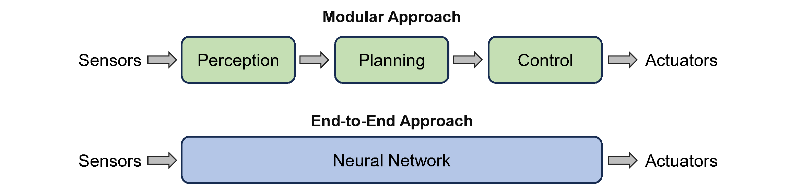
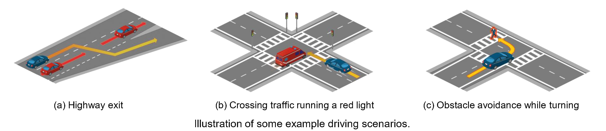
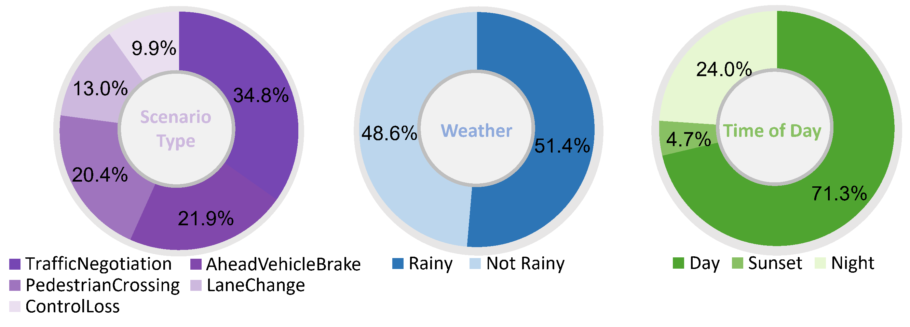
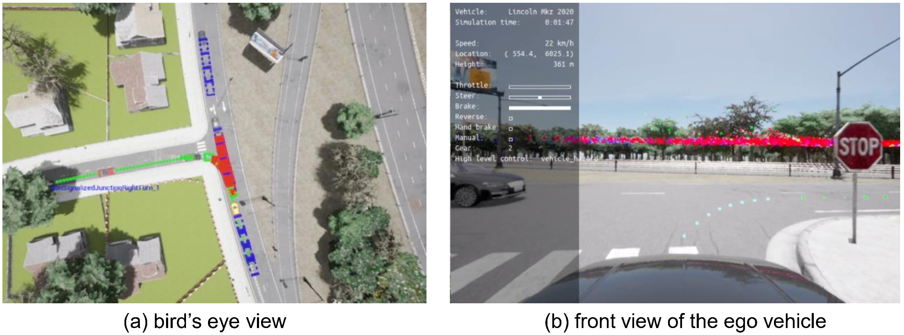
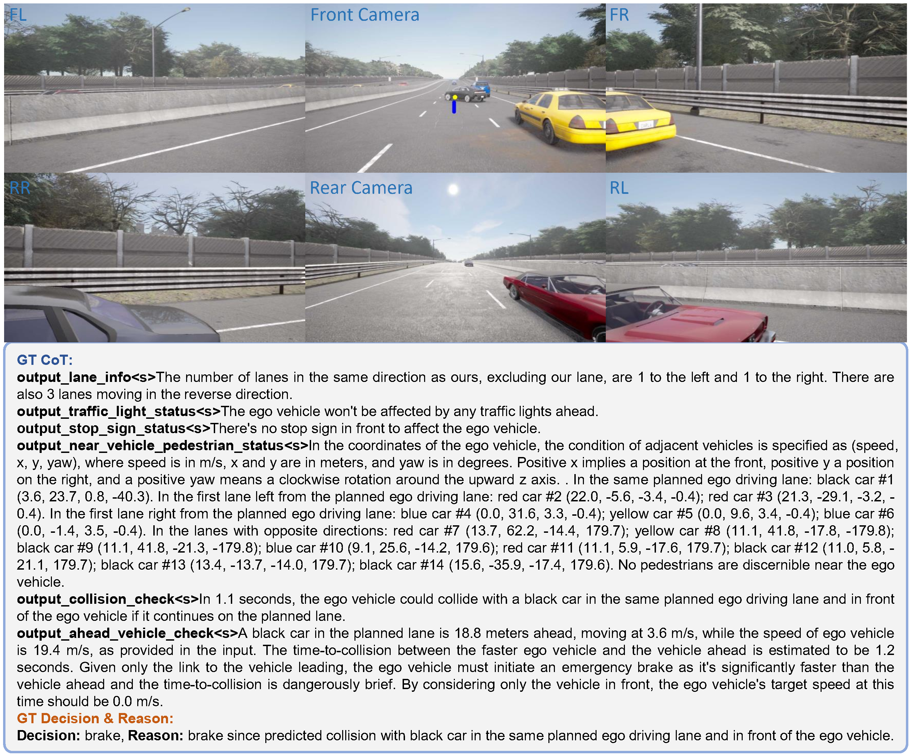
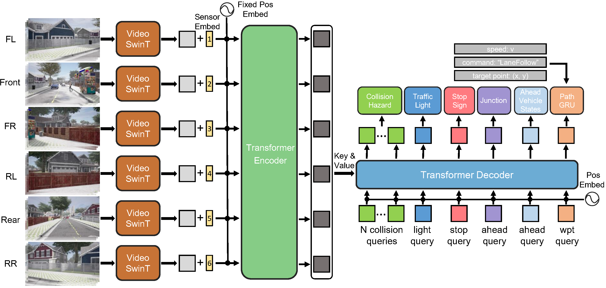
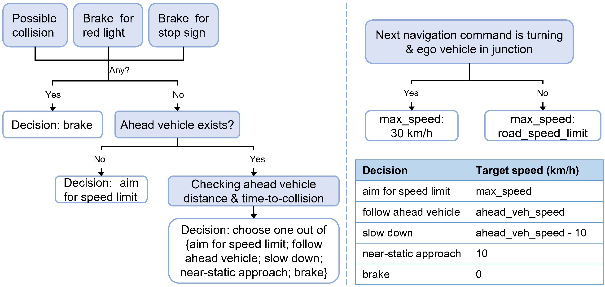

-
DriveCoT
Integrating Chain-of-Thought Reasoning with End-to-End Driving
Tianqi Wang1, Enze Xie2†, Ruihang Chu3, Zhenguo Li2 Ping Luo1†,
1The University of Hong Kong, 2Huawei Noah's Ark Lab, 3The Chinese University of Hong Kong
†Corresponding authors.
Abstract (Paper link)
The lack of interpretability and controllability in driving decisions hinders real-world deployment for end-to-end driving. In this paper, we collect a comprehensive end-to-end driving dataset named DriveCoT, leveraging the CARLA simulator.
DriveCoT provides: (1) the first end-to-end driving dataset containing chain-of-thought thinking process labels and diverse challenging driving scenarios, (2) a rule-based expert policy to handle the challenging scenarios in CARLA leaderboard 2.0 and generate the labels, and (3) a baseline model named DriveCoT-Agent to generate the chain-of-thought predictions and the final driving decisions.
The DriveCoT dataset comprises 1058 scenarios and 36K labeled samples (similar to nuScenes), collected at a 2 Hz frequency, averaging 17 seconds per scenario. DriveCoT contains sensor data such as images from multi-view cameras and lidar point clouds from ego vehicle, and the expert policy's reasoning process and decisions as driving understanding labels in a chain-of-thought format.
End-to-End v.s. Modular Driving
End-to-end driving has made significant progress in recent years, demonstrating benefits such as system simplicity and competitive driving performance under both open-loop and closed-loop settings. Nevertheless, the lack of interpretability and controllability in its driving decisions hinders real-world deployment for end-to-end driving systems.

In DriveCoT, we additionally annotate the chain-of-thought thinking process to get the final driving decisions, thus providing interpretability and controllability for end-to-end driving methods.

Driving Scenarios
The driving scenarios in DriveCoT include challenging situations such as high-speed driving and lane-changing, and are collected in the latest CARLA large map Town12. Specifically, we adapt most of the designed challenging scenarios in CARLA Leaderboard 2.0 but ignore those that force an overtaking behavior, which we plan to extend in our future work.

The scenario-level statistics of DriveCoT dataset are shown below:

Expert Policy
We propose a rule-based expert policy that has access to the ground truth states of the simulator. The expert policy controls the ego vehicle to handle the designed scenarios and complete the routes. Additionally, the thinking process of the expert policy is recorded to serve as the chain-of-thought labels of the proposed DriveCoT dataset. The chain-of-thought process includes checking potential hazards with red traffic light, stop sign, potential collisions with surrounding vehicles and pedestrians, and ego's relation to the ahead vehicle in the same driving lane. The final decisions include the target speed for longitudinal control and future planned waypoints for lateral control.

Dataset Annotation
Visualization of the collected data in DriveCoT dataset.
The second blue text line in the video shows the chain-of-thought thinking labels and the final speed decisions from the expert policy.
The yellow dot in the video is the additional navigation inputs to indicate directions.
The blue dots in the video are the future planned waypoints generated by the expert policy to determine the steering control.
We also provide detailed annotations in text-form besides the simplified classification and regression results on each chain-of-thought task. The text annotations are diversified by ChatGPT to vary sentence structures for each CoT aspect.

DriveCoT-Agent
We propose a baseline model called DriveCoT-Agent as shown below. This model processes video inputs from six surrounding cameras of different views over a specified time period. It predicts chain-of-thought aspects such as potential collisions, traffic light and stop sign hazards, and the relation to the vehicle ahead, to determine the target speed. The future planned waypoints generated via a GRU (Gated Recurrent Unit) layer.

Additionally, we propose a chain-of-thought process to obtain the final target speed based on network outputs. Specifically, it first considers the potential hazards that may trigger emergency brake. If no such hazards are identified, it then evaluates ego's relation to the ahead vehicle and the road structure. This chain-of-thought process decomposes the end-to-end driving into simple, distinctive tasks, enhancing both interpretability and controllability.

Experiment
Evaluation on the validation split of DriveCoT dataset.
The second blue text line: ground truth.
The third text line: model predictions (marked as green when matches
the GT, otherwise as red)
Yellow dot: target point. Blue dots: gt waypoints.
Green/Red dots: predicted waypoints.
Closed-loop testing
Yellow dot: target point. Green dots: predicted waypoints.
Citation
If you find the dataset helpful, please consider citing us.
@article{Wang_2024_DriveCoT,
title = {DriveCoT: Integrating Chain-of-Thought Reasoning with End-to-End Driving},
author = {Wang, Tianqi and Xie, Enze and Chu, Ruihang and Li, Zhenguo and Ping, Luo},
journal = {arXiv preprint arXiv:xxxxx},
year = {2024}
}